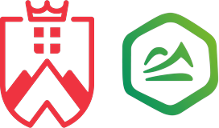
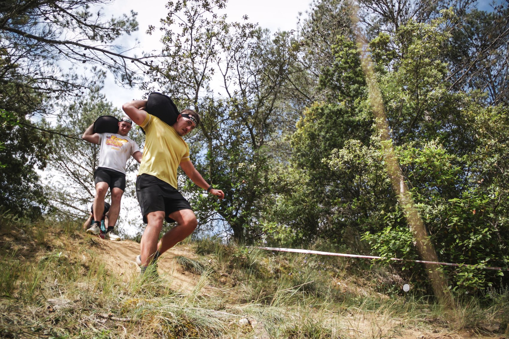

Loïs Courtade
Crossfit, boxe, trail, dix ans de natation en compétition, des saisons entières sur un poste de secours. Le sport n’est pas une ligne de CV chez moi : c’est ce qui structure mes semaines depuis l’enfance.
C’est aussi ce qui me rend utile à une marque outdoor. Je connais l’effort, le matériel et les gens qui les achètent, parce que j’en fais partie. Et l’engagement que je mets sur un poste de secours, je le mets dans un dossier marketing.
Deux ans, de la rentrée 2026 à l’été 2028. Basé à Annecy, mobile en Haute-Savoie et sur l’ensemble de la région.